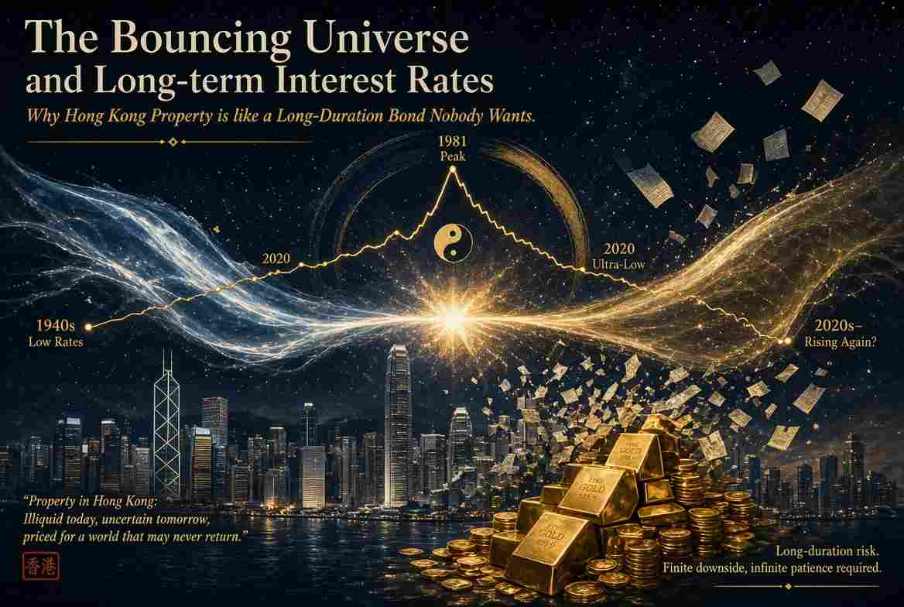
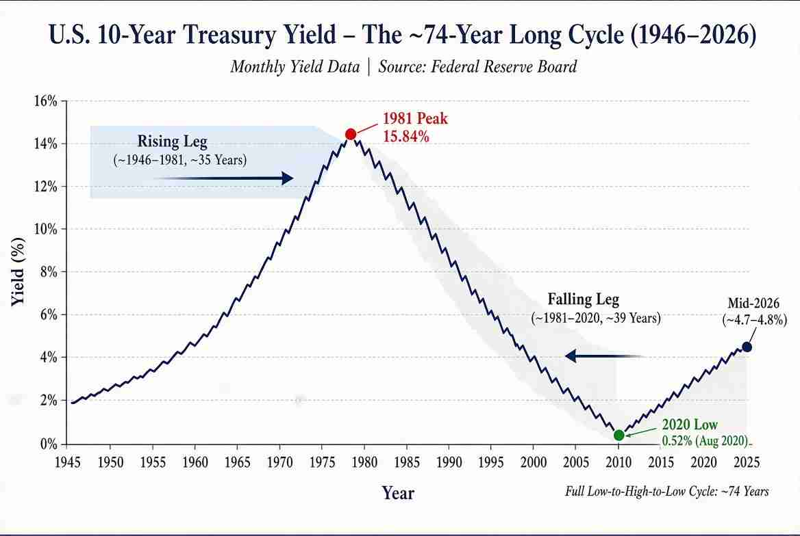

彈跳宇宙與長期利率
為何香港磚頭已變成無人想持有的長期債券

科學界普遍認同的宇宙論是「大爆炸」加上ΛCDM（Lambda冷暗物質）再加上「暴脹」。很久很久以前，整個宇宙被壓縮成一個極微小的奇點（Singularity）。某天這個奇點「砰」的一聲爆炸，宇宙開始膨脹。它至今仍在膨脹，而且因為一種神秘的被稱為Lambda（Λ）的暗能量（Dark Energy）令膨脹加速得更快。如果沒有暗能量，宇宙的膨脹本應在重力拉扯下逐漸減速。冷暗物質（CDM）是一種非重子物質，移動速度遠慢於光速，它在重力作用下聚集，形成星系結構的「骨架」。而暴脹則是早期一段極其迅速的膨脹，把宇宙熨得平坦而光滑。
還有另一派宇宙理論：循環或振盪模型。在這些模型裡，宇宙並非始於一次大爆炸，然後無限膨脹。它會膨脹、收縮（或「彈跳」），然後再膨脹 - 可能永遠如此。每個週期可長達數萬億年。最著名的現代版本是Steinhardt–Turok循環／火劫模型，它假設存在兩張巨大的宇宙「膜」（branes），漂浮在高維空間中。它們緩慢靠近，溫和碰撞後再彈開。每次碰撞就是一次新的「大爆炸」。碰撞前有一段漫長、極緩慢、極平滑的收縮過程，稱為「火劫」（ekpyrosis）。這段緩慢擠壓過程把宇宙「熨」得平坦。
彈跳宇宙理論與中國傳統思想十分吻合。中國人向來視宇宙為永恆的循環 - 透過不斷的轉化循環自我更新。古代典籍《十大經》概括道：「極而反，盛而衰，天地之道也，人之理也。」老子說得更直接：「反者道之動。」換句話說，當鐘擺往一方擺動時，它同時在儲蓄能量，準備往相反方向回擺；到了最高點，必然轉向。
長期利率（見下圖）也遵循同樣的節奏。10年期美國國債收益率從1940年代中期戰後低點約1.5%，一路攀升至1981年9月的15.84% - 大約35年的上升週期。隨後它又下跌了39年，於2020年8月觸及歷史低點0.52%。從低到高再回低，整整約74年。每個主要腿期持續35至40年。30年期國債情況類似：2020年接近1%的低點後，近期已升至約5.2%。

我認為主要利率趨勢現已向上。美國聯邦總債務已突破40萬億美元。即使在經濟擴張時期，政府仍年年出現數萬億美元赤字。一旦債務大到無法用真金白銀償還，聯儲局的首要任務就變成防止債券市場崩盤。政治上唯一可行的工具只剩下某種形式的殖利率曲線控制，用新印的錢買債券或壓制收益率，避免長期利率升得太高而引爆利息成本。這就是變相的金融壓抑。
債權人並不傻。外國央行多年來一直在減持美債。購買長期債券的投資者需要相信通脹會被控制住。一旦開始懷疑，他們就會要求更高的收益率。
債券在過去六年多已成死亡陷阱，未來看來仍是如此。收益率升得越高，價格跌得越深。
房地產的邏輯一樣。利率上升提高按揭成本、推高投資者要求的資本化率，從而降低未來租金的現值。成交量放緩、發展停滯、價格向下調整。商業地產（寫字樓、零售店）本已面臨遙距工作與電子商務的結構性逆風，更高利率只是雪上加霜。住宅市場相對有韌性，因為人仍需要住處、供應往往受限，但隨著利率上升，新買家的負擔能力會變得極其嚴峻。
香港是極端案例。根據最新《國際住房負擔能力報告》（Demographia），中位數樓價對收入倍數仍達14.1 - 意味著一個家庭必須把全部收入連續14.1年完全不吃不喝、不坐車、不消費，才能買到一套中位價單位。香港已連續十六年蟬聯全球主要城市中最難以負擔的住房市場。即使經歷了從2021年高峰（倍數一度達23.2）的多年調整，香港仍屬「嚴重難以負擔」級別。逐漸攀升的利率只會讓情況變得更差。
你或許會說：政府印錢來稀釋巨額債務，也會同時推高樓價，因此若以現金全款買樓、不借按揭，房地產仍能保值。然而當同樣的樓價用硬尺度 - 黃金 - 來衡量時，畫面便截然不同。
看看香港住宅市場。差餉物業估價署的私人住宅售價指數（1999年＝100）在2021年攀至約393的高峰。到2024年底至2025年，已跌至約280至290出頭 - 名義跌幅約25–28%。即使2025–2026年有部分反彈，價格仍遠低於2021年高位。
同期黃金已不止翻倍。物業高峰時每盎司約1,800–2,000美元的金價，如今已升至4,300–4,600美元以上。換句話說，買一套單位所需的港元數量只溫和下跌，但所需的黃金盎司數量卻大幅減少。以真實、無法印刷的黃金衡量，香港住宅物業已明顯變得更便宜。
再拉長時間軸。2000年，一套中檔地區800平方呎的單位可能成交價約400萬港元。當時金價約每金衡盎司2,000港元，這套單位約值2,000盎司黃金。
今天同一單位名義價格可能約值1,000萬港元。然而金價已升至每盎司約32,000–35,000港元。以黃金計算，這套單位現在只值約280–310盎司 - 實質下跌超過八成。
簡言之，名義香港樓價經歷了數十年牛市。但以無法被印刷的黃金衡量，一套普通單位的真實購買力，遠低於千禧年之初。
租金回報也毫不吸引。香港住宅物業毛租金回報率目前約3.3–3.6%。扣除管理費、差餉、維修與空置成本後，淨回報往往跌至2%或以下。為何要為磚頭的麻煩、不流動性與槓桿風險，只換取約2%的回報，而無風險的10年期美國國債卻能給你約4.7%？
老子在《道德經》第七十七章說：「天之道，損有餘而補不足。」在香港樓市，過高的一直是估值、槓桿，以及「樓價只會升」的頑固信念。當前的調整，不過是「道」在運行。如果長期利率週期繼續與歷史押韻，收益率的主趨勢向上，即使上升週期只大致相當於前兩次（三十至四十年），也足以持續對債券與房地產造成壓力。在這樣的環境下，持有長期紙債或高槓桿物業，看起來不再是可靠的保值方法，而更像是購買力的必然被侵蝕。
沒有人能逆轉這個長週期，也沒有人能擋住潮水。聰明的資本會順勢而為，而不是逆流而上。
這篇文章也已發佈在我的Substack網站上
免責聲明
本部落格所提供之內容僅供資訊與教育用途，並不構成任何財務、投資或專業建議。本人並非持牌財務顧問；文中所表達之觀點僅屬個人基於邏輯思考與一般觀察所得的意見。金融市場本質上具有高度波動性與不可預測性，過往表現並不代表未來結果。
強烈建議讀者在作出任何投資或財務決策前，應自行進行獨立研究、充分的調查分析，並諮詢合格的專業人士。透過存取及使用本部落格的資料，您即承認並同意作者對於因依賴此處所載資訊而可能導致的任何損失、損害或不利結果，概不承擔任何責任或義務。